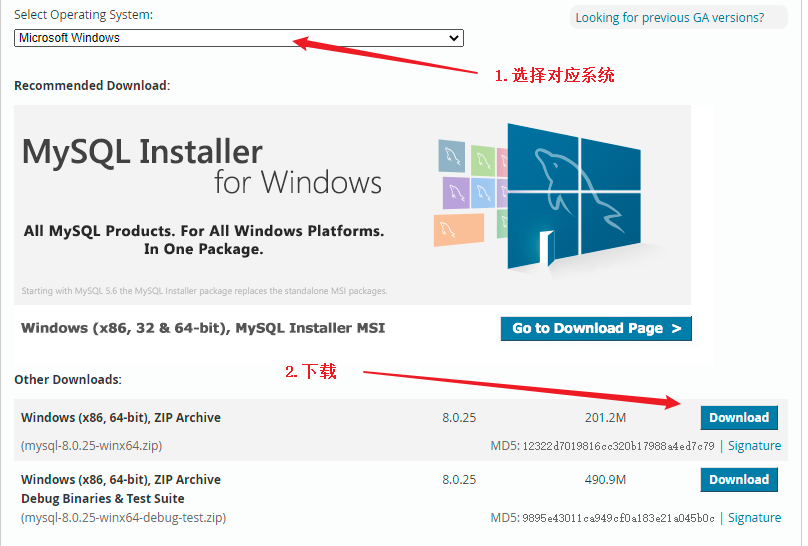
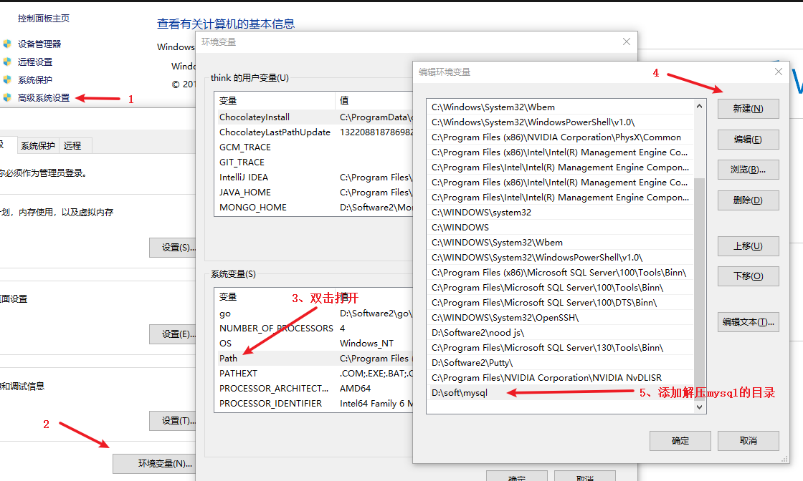
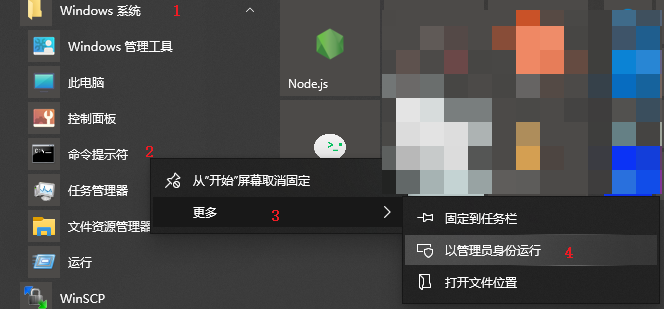
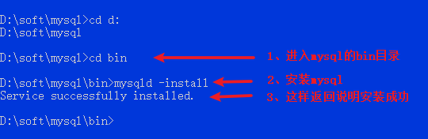
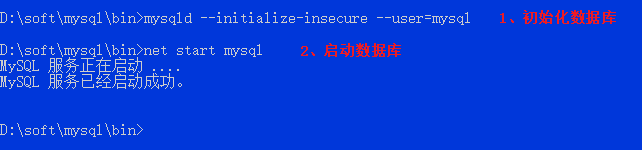
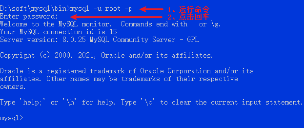
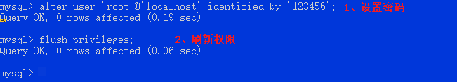
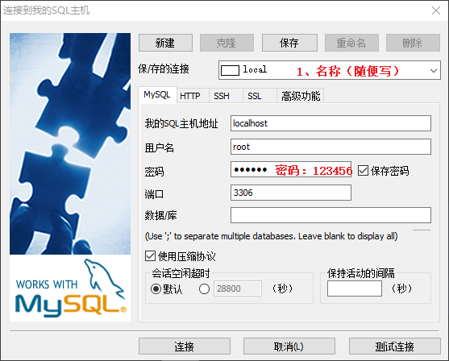

# MySQL
# 概述
数据库是什么？
数据库是存放数据的一个软件。
刚学习数据库时很好奇，数据明明可以存储在文件中，为什么要数据库？
可能每个初学者都有这个疑惑，这里说明一下。
数据存放数据库中有以下优点：
（1）有利于检索（搜索）和关联数据
名字 年龄 班级
Tom 18 6
Jerry 14 5
当我们有下面这样一份数据，通过名字来查询用户的其他信息，如果存放在文件中，很难使用编程语言进行查询。
如果这个文件很大时，很难找到这个数据，内存的消耗也是很大的。
数据库中的数据是关联的，如果这个数据存放在数据库中，我们很容易的检索出来。
（2）有利于维护
数据库的各种完整性约束会制定一些规则，保证数据的有效、完整、正确、一致。
（3）有利于修改
如果数据存放在文件中，很多人像同时修改数据会变的很难，这也是数据库能做到的。
（4）数据的持久性
存放再文件中的数据有可能，误删，数据丢失等问题，但数据库系统却有相关机制保证数据持久正确可用。
MySQL 使用的最为广泛，这里会介绍基本使用，掌握了基本使用可以处理日常开发的 80% 的业务。
# 安装 MySQL
（1）下载
建议不要下载 .exe 结尾的程序，建议下载压缩包。

注意：需要注册一个 oricle 账号，或者使用这个账号登录下载。
账号：1653794708@qq.com
密码：Eli989898,
下载完成后，解压到存放应用程序的目录下，我下载的目录是 D:\soft\mysql\。
（2）环境变量配置
打开 “控制面板” 添加环境变量。

（3）新建配置文件
在 MySQL 安装目录下（我的目录就是 D:\soft\mysql\）新建 my.ini 的文件，并且添加以下配置
[mysqld]
# D:\soft\mysql\ 换成自己的安装msql的目录
basedir=D:\soft\mysql\
# 自定义设置mysql数据库的数据存放目录
# 注意要写自己的目录, 例： D:\\soft\\mysql\\data\
datadir=“数据库目录 + data”
port=3306
skip-grant-tables
::: worrning 注意
上面的 datadir 要写自己电脑存放 mysql 的目录。
:::
（4）安装服务
管理员模式下启动 CMD（代开 mysql 目录，不要使用 powereshell），切换到 mysql 目录下的 bin 目录，输入 mysqld -install 命令，将 mysql 加入到 Windows 的服务中 。

输入以下命令安装

（5）初始化数据目录
现在需要初始化一个存放数据的目录。
mysqld --initialize --console --user=mysql
此命令会随机生成一个密码，需要记住密码，后面会用到。
（6）启动
成功后启动数据库
net start mysql

这时候已经启动了服务，我们使用 mysql -u root -p 命令进入数据库，输入密码时，点击之前生成的密码。

（7）修改密码
进入数据库使用以下命令修改密码，并且刷新权限。
-- 修改密码
alter user 'root'@'localhost' identified by '123456';
-- 刷新权限
flush privileges;

连接可视化工具可能会失败，先运行以下命令，之后在连接。
# root用户连接数据库
mysql -u root -p123456
-- 修改加密规则
ALTER USER'root'@'localhost' IDENTIFIED BY 'root' PASSWORD EXPIRE NEVER;
-- 更新一下用户的密码
ALTER USER'root'@'localhost' IDENTIFIED WITH mysql_native_password BY '123456';
-- 刷新权限
flush privileges;
（8）停止服务
使用 exit 命令可以退出 mysql 界面。
mysql> exit;
Bye
C:\soft\mysql-8\bin>
使用 net stop mysql 停止后台运行的 mysql。
C:\soft\mysql-8\bin>net stop mysql
MySQL 服务正在停止.
MySQL 服务已成功停止。
C:\soft\mysql-8\bin>
运行到这里说明，mysql 已经安装成功。
之后启动时，先运行服务，之后登录即可。
net start mysql
mysql -u root -p123456
其他命令：
# 清空服务
sc delete mysql
# 可视化工具
操作数据库是一般使用命令操作的。这里推荐使用一个可视化操作工具，为了更直观的查看数据库中的数据和数据的对应关系。
我这里推荐 sqlyong，点击下载👉 sqlyog (opens new window)。 提取码：a1kw
安装完成后，注册码：
姓名（Name）：cr173
序列号（Code）：8d8120df-a5c3-4989-8f47-5afc79c56e7c
使用 sqlyong 连接数据库

如果连接失败，先运行以下命令，之后在连接。
# root用户连接数据库
mysql -u root -p123456
-- 修改加密规则
ALTER USER'root'@'localhost' IDENTIFIED BY 'root' PASSWORD EXPIRE NEVER;
-- 更新一下用户的密码
ALTER USER'root'@'localhost' IDENTIFIED WITH mysql_native_password BY '123456';
-- 刷新权限
flush privileges;
# MySQL 基本命令
MySQL 属于关系型数据库，不像 mongoDB，MySQL有自己的查询语言，首先简单介绍一下SQL语句。
SQL 语句中，-- 表示注释，sql 语言不区分大小写。
（1）基本命令
-- 连接数据库
mysql -u root -p123456
-- 修改密码
alter user 'root'@'localhost' identified by '123456';
-- 刷新权限
flush privileges;
-- 退出连接
exit
（2）显示表
显示表中所有元素
-- 查看所有数据库
show databases;
-- 操作的实例/使用数据库
use shool;
-- 显示表
show tables;
-- 显示表重所有信息
describe student;
（3）创建表
-- 创建数据库[创建失败不会退出]
create database [if not exists] blog;
-- 删除数据库[创建失败不会退出 ]
drop database [if exists] blog;
（2）增加数据
-- 增加两条数据
insert into users(username,`password`,realname) values ('Tom','123','汤姆');
insert into users(username,`password`,realname) values ('Jerry','456','杰瑞');
（3）查询
-- 查询全部
select * from users where state='1';
-- 局部查询
select id,username from users;
select * from users where username='Tom' and password='123' or password='124';
-- 查询含有 J 字母
select * from users where username like '%J%';
-- 排序后面加上 order by id desc
（4）更新
-- 更新
-- SET SQL_SAFE_UPDATES=0;
-- update users set state='0' where username="Jerry";
（5）删除
-- 删除
delete from users where username='Jerry'
# 数据类型
（1）数值
- tinyinit：1个字节
- mallint：2个字节
- int：4个字节（常用）
- big：8个字节
- float：4个字节
- double：8个字节
- decimal：字符串形式的浮点数，金融计算使用
（2）字符串
- char：字符串 0 - 255
- varchar：可变字符串（常用），0 ~ 65536
- tinytext：微型文本（0 ~ 2^8 - 1)
- text：文本 2^16 （常用）
（3）时间日期
date：YYYY-MM-DD
time：HH:mm:ss
datetime：YYYY-MM-DD HH:mm:ss （常用）
timestamp：时间戳
year：年份
（4）null
# 数据库字段属性
- unsigned：无符号整数
- zerofill：零填充，不足的位数用零填充
- auto_increment：自增，自动在上一条记录的基础上增加一，必须为整数
- not null：不给这个属性赋值会报错
- default：设置默认值，默认为 null
每个表中有固定的字段，这是规范，不是必须的。
- id：主键
- version：乐观锁
- is_delete：伪删除
- gmt_create：创建时间
- gmt_update：修改时间
# Node.js 中使用 MySQL
初始化项目，和安装
npm init -y
npm i mysql
一个完整的案例：
// index.js 文件
const mysql = require('mysql')
// 创建对象 & 配置
const con = mysql.createConnection({
host:'localhost', // 连接的主机
user: 'root', // 用户名
password: 'sql123', // 密码
posrt:'3306', // 端口
database: 'myblog' // 实例
})
// 连接数据库
con.connect()
// 查询
var sql = 'select * from users'
con.query(sql,(err,data)=>{
if(err){
console.log(err)
return
}
console.log(data)
})
// 关闭连接
con.end()
# 彻底关闭
win10 按住 win + R 输入 services.msc，查找 mysql 是否在启动，如果以启动，右击停止。
# 创建表
创建完整表的格式如下：
CREATE TABLE IF NOT EXISTS `表名` (
`字段名` 类型 [属性] [索引] [描述],
`字段名` 类型 [属性] [索引] [描述]
)[表类型][字符集]
下面创建了一个学生表的例子。
CREATE TABLE IF NOT EXISTS `student` (
`id` INT(4) NOT NULL AUTO_INCREMENT COMMENT '学号',
`name` VARCHAR(50) NOT NULL DEFAULT '匿名' COMMENT '姓名',
`passqord` VARCHAR(20) NOT NULL DEFAULT '123456' COMMENT '密码',
`sex` VARCHAR(2) NOT NULL DEFAULT '男' COMMENT '性别',
`bir` DATETIME DEFAULT NULL COMMENT '生日',
PRIMARY KEY(`id`)
)ENGINE=INNODB DEFAULT CHARSET=utf8
如果数据表已经存在，想查看创建的命令，可以使用以下命令查看创建表的命令。
SHOW CREATE TABLE `user` -- 查看 user 表创建的命令
DESC `student` -- 查看表的结构
# 数据表示的类型
- INNODB，节约空间，速度快
- MYSISANM，安全性高，事务的处理，多表多用户操作
| INNODB | MYSISANM | |
|---|---|---|
| 事务 | YES | NO |
| 数据行锁 | YES | NO |
| 外键约束 | NO | YES |
| 全文搜索 | NO | YES |
| 占用空间 | 较小 | 较大，约2倍 |
所有数据库存在 data 文件中。